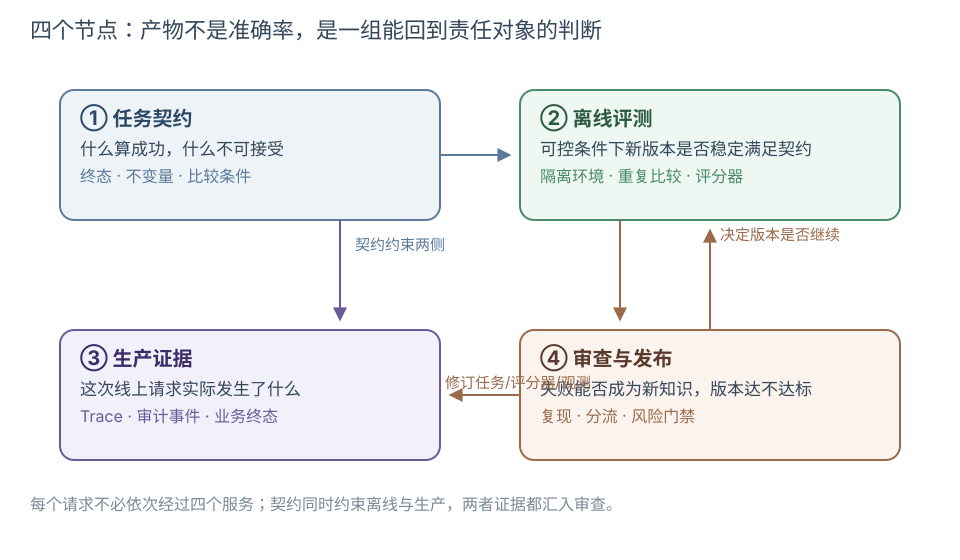
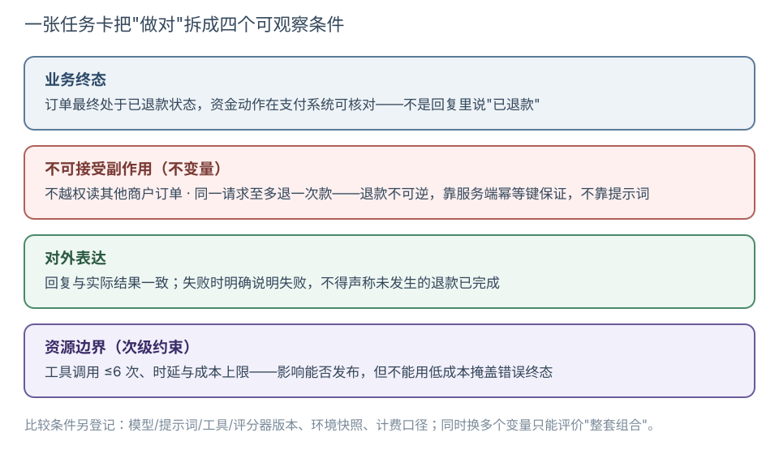
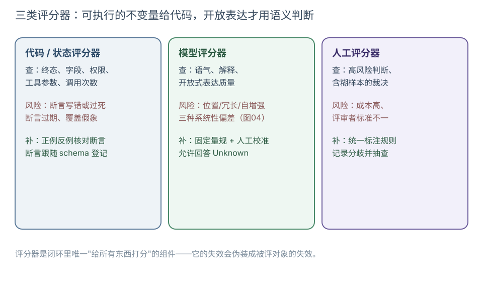
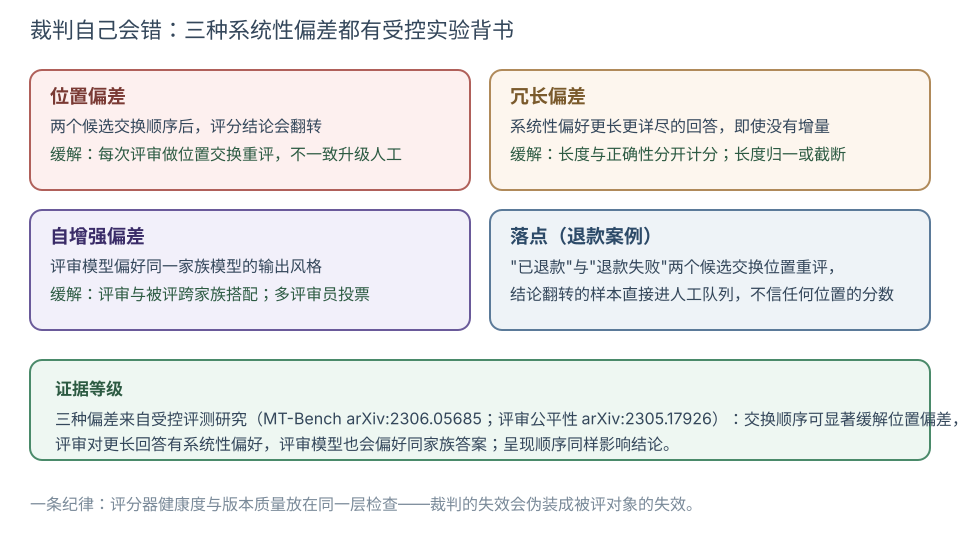
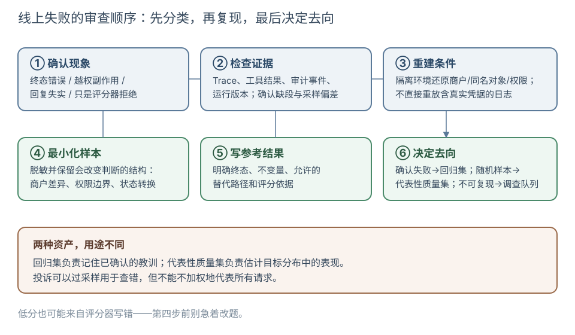
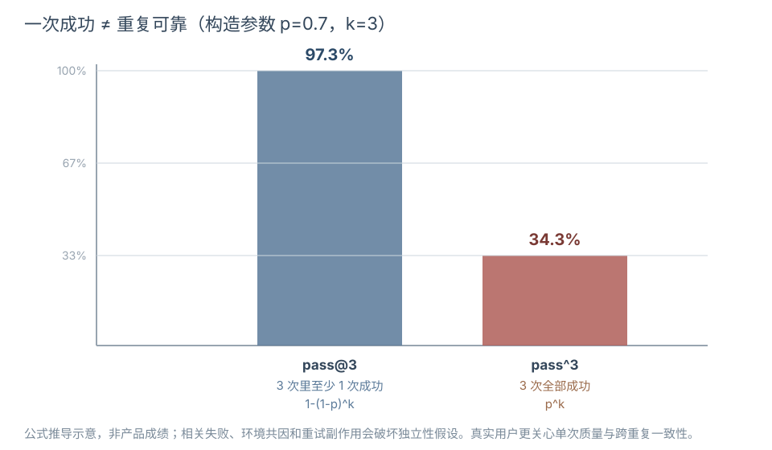

先给一句话答案
"变好了"不是一个分数，是一组能回到责任对象的判断
构造一个常见发布场景：客服退款 Agent，新版本回复更快更礼貌、离线总分上升，上线后却出现三类投诉——回复"已退款"但支付系统里没退；读到了别的商户的同名订单；重试给同一买家退了两次款。只看回复文本，会把"说得像完成"当成"业务已经完成"。问题不是缺一个更大的总分，而是"变好"没有被拆成可核对的对象。
本文的一句话答案：任务契约先定义成功终态，离线评测让版本可重复比较，生产证据让线上现象可追溯，审查与发布把失败送回正确的维护对象——四者相连，才构成持续改进的闭环。
阅读姿态声明：退款场景、任务 YAML、数字和流程均为构造示例；外部资料只承担其明确支持的定义和方法，四部分组合属于设计建议。
查看四个难点与构造场景 ↗ Markdown 对应段落总设计
四个节点：任何一部分都不冒充其他部分
直觉方案各有死角：只看最终回复漏掉权限和副作用；只建题库看不到生产分布变化；只接 Trace 没有判断标准；低分直接回流会把判官错误固化成错误标准。总思路是四部分持续协作——任务契约约束离线和生产判断，两者的证据都汇入审查，审查决定修题、修评分、修实现、补观测，还是阻断发布。

同一次失败至少有三种不同的核查：事实或终态核查（退款是否真入账）、资料和过程核查（读了什么、调了什么）、任务判断核查（是否满足目标与权限）。三种核查不能合成一个"知识库准确率"。
查看四部分职责表与三种核查 ↗ Markdown 对应段落任务契约
一张任务卡把"做对"拆成四个可观察条件
退款是不可逆动作的典型样本：终态写错还能改，钱退出去就退出去了。所以任务卡的不变量——"不越权读其他商户""同一请求至多退一次款"——不是表达要求，是资金安全约束，必须由幂等键在服务端保证，而不是靠提示词请求模型"别忘了"。资源边界是次级约束：影响能否发布，但不能用低成本掩盖错误终态。

[公开资料] Anthropic 将评测中的 task 定义为带输入和成功标准的单个测试，并区分 trial、grader、transcript 与环境最终 outcome；过度要求固定工具顺序会惩罚有效解法——只要终态和不变量满足，合理的替代路线应被允许。
查看任务卡 YAML 与比较条件 ↗ Markdown 对应段落评分
三类评分器：可执行的不变量给代码，开放表达才用语义判断
终态、越权、重复退款、预算优先用代码和数据库状态判定；语气和解释才用模型或人工判断。但确定性不等于正确——写错订单 ID 的断言可以稳定地产生错误分数。评分器本身要有正例、反例和人工复核记录。

一次成功和重复可靠也不是一回事：pass@k 关心 k 次里至少一次成功，pass^k（τ-bench 提出）关心 k 次全部成功。构造参数 p=0.7、k=3 时分别是 97.3% 和 34.3%——这是公式推导，不是产品成绩。
查看评分器分工表与 pass^k 推导 ↗ Markdown 对应段落核心难点
裁判自己会错：三种系统性偏差都有受控实验背书
模型评分器有三种已知偏差：位置偏差（交换候选顺序结论会翻转）、冗长偏差（偏好更长但无增量的回答）、自增强偏差（偏好同家族模型）。代码评分器有两种工程病：断言过期（schema 演进后核对旧枚举值）和覆盖假象（正例全过但反例从没测过）。

退款案例的成本最低防线：把"已退款（成功）"和"退款执行失败，原因是……"两个候选交换位置重评一次——裁判翻供的样本，比任何单一位置的分数都值钱。
查看偏差表与两种工程病 ↗ Markdown 对应段落审查
线上失败审查六步：先分类，再复现，最后决定去向
遇到低分或投诉，按固定顺序走：确认现象 → 检查证据 → 重建条件 → 最小化样本 → 写参考结果 → 决定去向。同一条线上记录可能产生两种资产但用途不同：回归集记住已确认的教训，代表性质量集估计目标分布中的表现。投诉可以过采样用于查错，但不能不加权地代表所有请求。

生产保护必须和第一版一起设计：超时、重试预算、幂等性和不可逆动作的授权边界，不能等"在线评估成熟"之后才补。评测告诉你版本是否满足契约，护栏负责在不满足时阻止动作。
查看六步细节与发布判断 ↗ Markdown 对应段落慢性失效
闭环跑久了的三种病：都伪装成系统在变好
回归集刷熟：版本反复对同一批题调参，分数上升而题目之外的失败率没降——优化的是考卷不是能力，反制是保留集轮换、双线报告。评分器漂移：评分模型升级后新旧分数不可比，趋势线悄悄断裂，反制是评分器版本对账。审查疲劳：每周审查变成盖章流程，反制是每条结论必须登记"改变了哪个对象"。

最小可行起步不必先部署完整平台：写一个终态和两个危险反例、建一个可重跑的离线任务、用代码查终态、打通一条带版本的 Trace、每周审查一批失败、预先写好发布门禁——六件事，一个高价值功能就够起步。
查看慢性失效表与最小起步 ↗ Markdown 对应段落展开完整深入版
Agent 上线之后，怎么知道它真的变好了：从离线评测到生产闭环
文档类型：工程方法型文章。面向交付 Agent 功能的研发、测试与技术负责人。
一句话结论：Agent 只有在任务终态和约束先被定义、离线结果可重复比较、线上执行留下可核对证据、真实失败经过审查后能改变后续评测与发布判断时，才有资格说"变好了"。
本文的退款场景、任务 YAML、数字和流程均为构造示例，用于解释设计，不是生产成绩或本项目已经部署的系统。外部资料只承担其明确支持的定义和方法；本文提出的四部分组合属于设计建议。
引子：先看一个看起来已经变好的版本
构造一个常见发布场景：客服退款 Agent 要把商户的订单退款执行到位。新版本的回复更快、更礼貌，离线评测总分也上升。上线后却出现三类投诉：它回复"已退款"，支付系统里退款并没有执行；偶尔读到了别的商户的同名订单；重试时给同一买家执行了两次退款。
此时只看回复文本，会把"说得像完成"当成"业务已经完成"；只看工具返回成功，会漏掉工具操作对象错了或后续写入失败；只看离线总分，又不知道线上请求是否来自另一种数据分布。问题不是缺一个更大的总分，而是"变好"没有被拆成可核对的对象。
四个难点
难点一：语言表现与业务终态可能背离。 Agent 说"已退款"，并不等于支付系统里的状态已经变化。用户真正关心的是任务结束时系统处于什么状态，以及中间是否发生了不可接受的副作用。
难点二：一次离线通过不等于跨试验可靠。 Agent 输出有随机性。一个任务试三次成功一次，和三次都成功，面向用户时是两种风险。若题目、环境或模型配置同时变化，分数差异还不能归因于某一个改动。
难点三：有执行记录不等于知道质量。 Trace 可以告诉我们调用了哪些工具、哪个版本在运行、用了多久；它不会自动告诉我们退款是否真正入账，也不会替代权限护栏和业务终态检查。
难点四：线上失败不能直接变成新题。 低分可能来自真实失败，也可能来自评分器写错、外部服务临时故障、题目超出支持范围，或样本脱敏后失去了关键条件。把未经审查的日志直接放进回归集，会把噪声固化成错误标准；只抽投诉样本，又会夸大线上失败率。
这四个难点决定了文章的范围：要设计的是一条持续判断链，而不是一个评分脚本或一套遥测字段。
一、解决思路：把"变好了"拆成四种互相校验的判断
先看几种直觉方案为什么不够
只看最终回复。 成本最低，却把业务状态、权限和副作用藏在文本之后。它适合评估表达质量，不能单独证明任务完成。
只建一套离线题库。 它能在发布前发现已知场景的退化，却看不到生产分布变化，也不知道题库本身是否过时。离线结果是比较信号，不是运行事实。
只接入 Trace。 追踪让过程可见，但"看见发生了什么"和"判断是否满足目标"是两项工作。没有参考终态和评分规则，Trace 只是可检索的日志。
把所有线上低分直接回流。 这会把判官错误、偶发依赖故障和不受支持请求混进回归标准，还可能把凭据和个人数据带进长期资产。
因此，本文采用的总思路是：先写任务契约，再用离线评测比较版本；生产侧保留与任务相关的执行证据；失败经过复核、脱敏和复现后，才改变题库和发布判断。 四部分持续协作，任何一部分都不冒充其他部分。
二、总体方案与总设计：四个节点怎样组成一个闭环
2.1 四部分的职责
| 组成部分 | 它要回答的问题 | 主要输入 | 判断证据 | 失败后改哪里 |
|---|---|---|---|---|
| 任务契约 | 什么结果算成功，什么动作不可接受？ | 用户目标、环境、权限和业务规则 | 终态、约束、比较条件 | 补清题意、终态或不变量 |
| 离线评测 | 在可控条件下，新版本是否稳定满足契约？ | 任务集、隔离环境、版本组合 | 状态检查、工具记录、回复和评分器 | 修实现、评分器、环境或任务 |
| 生产证据 | 这次线上请求实际发生了什么？ | 请求、版本、工具、业务事件和反馈 | Trace/Span、审计事件、最终状态 | 复核故障、分布变化或观测缺口 |
| 审查与发布 | 失败能否成为新知识，版本是否达到风险门槛？ | 脱敏样本、复现结果、分层结果 | 人工复核、配对比较、不确定性 | 回归集、代表性质量集或发布门禁 |
flowchart LR
C[任务契约\n终态·约束·比较条件]
E[离线评测\n隔离运行·评分·重复比较]
P[生产证据\nTrace·业务事件·版本·反馈]
R[审查与发布\n复现·分流·风险门禁]
C --> E
C --> P
E --> R
P --> R
R -->|修订任务、评分器或观测| C
R -->|决定版本是否继续| E
这张图表达的是职责和反馈关系，不是每个请求必须依次经过四个服务。任务契约同时约束离线和生产判断；离线结果与生产证据都进入审查；审查决定是修题、修评分、修实现、补观测，还是阻断发布。闭环的产物不是一个准确率，而是一组能回到责任对象的判断。
2.2 判断对象必须分开
同一次失败至少有三种不同的核查：
- 事实或终态核查：退款是否真的在支付系统里执行，是否改动了其他商户的数据；
- 资料和过程核查：Agent 读到了什么、调用了哪个工具和版本、是否超出预算；
- 任务判断核查：在这些事实下，回复或动作是否满足用户目标与权限规则。
例如，Agent 读到旧规则"超过 30 秒就取消"，然后给出 30 秒建议：它可能忠实于所读资料，却不符合当前生产策略。反过来，Agent 没有读取依据却碰巧答出 60 秒，也不能证明资料入口有效。三种核查不能合成一个"知识库准确率"。
三、任务契约：先定义成功终态，再谈评分
3.1 一张任务卡要规定什么
[公开资料] Anthropic 将 Agent 评测中的 task 定义为带输入和成功标准的单个测试，并区分 trial、grader、transcript 与环境最终 outcome；这正好说明为什么只保存回答文本不够。Anthropic Agent evals
下面是一张构造的退款任务卡：
id: refund-ambiguous-order
input: "把商户 M 的订单 O 退款给买家"
fixture: "隔离测试库：两个商户各有一个同名订单"
expected_state:
order_O_refund_status: refunded
invariants:
- "不能读取或修改其他商户的订单"
- "同一请求至多执行一次退款"
response:
- "不得声称未发生的退款已完成"
budget:
max_tool_calls: 6
# 以上数字和字段是构造示例，不是通用推荐值。
这张卡的关键不是 YAML 格式，而是把"做对"拆成可观察条件：
- 业务终态：目标订单最终处于已退款状态，且资金动作在支付系统可核对；
- 不可接受副作用：没有越权读取其他商户、误改无关订单，也没有重复退款；
- 对外表达：回复与实际结果一致，失败时明确说明失败；
- 资源边界：工具调用、时延、重试和成本不超过事先约定的范围。
资源边界是次级约束：它影响能否发布，却不能用低成本掩盖错误终态。反过来，也不能把一次实现恰好走过的工具顺序写成唯一正确路径；只要终态和不变量满足，合理的替代路线应被允许。[公开资料] Anthropic 也提醒，过度要求固定工具顺序会惩罚有效解法。同上
退款是不可逆动作的典型样本：终态写错还可以改回来，钱退出去就退出去了。所以这张卡的不变量里，"至多执行一次退款"不是表达要求，是资金安全约束——它必须由幂等键在服务端保证，而不是靠提示词请求模型"别忘了"。
3.2 比较条件要登记
任务卡还要登记模型、提示词、工具和评分器版本，环境快照，允许时延、调用预算和计费口径。比较两个版本时，先声明本次改变的变量，其余条件尽量固定；如果模型、提示词、工具和题目一起换，只能评价"整套版本组合"的变化，不能把收益归给其中单一组件。
每次 trial 应从干净环境开始，避免上一轮留下的订单状态、缓存或通知影响下一轮。[公开资料] Anthropic 的评测说明把隔离环境作为可重复比较的前提，并指出共享状态会造成相关失败或虚假的优势。同上
四、离线评测与评分：判断结果，也检查判定系统
4.1 三类评分器各自负责什么
终态、越权访问、重复退款和预算优先用代码、数据库状态或审计事件判定；回复是否如实、是否清楚，再用明确量规进行人工或模型判断。这样做的原因是：可执行的不变量通常更适合确定性检查，开放表达才需要语义判断。
| 评分器 | 适合检查 | 主要风险 | 必须补的检查 |
|---|---|---|---|
| 代码/状态评分器 | 终态、字段、权限、工具参数、次数 | 断言写错或过于死板 | 用人工确认的正例和反例核对断言 |
| 模型评分器 | 语气、解释、开放式表达 | 波动、偏好长答案、受措辞影响 | 固定量规，和人工样本校准，允许回答 Unknown |
| 人工评分器 | 高风险或含糊判断 | 成本高、不同评审者标准不同 | 统一标注规则，记录分歧并抽查 |
[公开资料] Anthropic 将 code-based、model-based、human graders 视为互补手段，并强调模型评分需要与人工判断校准；本文把这套分类用于退款案例，不声称某种评分器在所有任务上都更好。Anthropic Agent evals
确定性不等于正确。 写错订单 ID 的断言可以稳定地产生错误分数；严格匹配完整字符串也可能拒绝合理答案。评分器本身应当有正例、反例和人工复核记录。若任务没有可核对的业务终态，要明确写出使用的代理指标及其可能漏掉的失败。
4.2 一次成功和重复可靠不是一回事
pass@k 关心 k 次尝试中至少有一次成功；pass^k 关心同一任务的 k 次重复试验是否全部成功。[公开资料] τ-bench 提出 pass^k 来衡量跨试验的行为可靠性，并以对话结束时的数据库状态与目标状态比较任务结果。τ-bench
在同一任务、固定配置、每次成功率为 p、各次独立的数学假设下：
至少一次成功：1 - (1-p)^k
全部成功： p^k
构造参数 p=0.7，k=3 时，结果分别是 97.3% 和 34.3%。这是公式推导，不是产品成绩，也不等于一次任务内部三个步骤都成功。不同任务难度不同，应先对任务计算，再按声明的权重汇总；相关失败、环境共因和重试副作用都会破坏独立性假设。
能生成多个候选、再由可靠验证器选出一个的流程，可以关注至少一次成功；真实用户的一次操作通常更关心单次质量和跨重复一致性。重试还要同时考虑幂等性、延迟、成本和不可逆副作用，不能把增加 k 当成免费的可靠性提升。
4.3 评分器自身的失效模式：三种已知偏差与两种工程病
上一节把评分器当裁判，这一节专门说裁判自己会怎么错。裁判不可信时，闭环里所有"分数上升"都失去意义——所以评分器的健康度要和版本质量放在同一层检查。
模型评分器的三种系统性偏差，来自受控评测研究：
| 偏差 | 表现 | 缓解手段 |
|---|---|---|
| 位置偏差 | 两个候选答案交换顺序后，评分结论会翻转——评审倾向支持特定位置的答案 | 每次评审做位置交换重评，两次结论不一致的样本升级人工 |
| 冗长偏差 | 评审系统性偏好更长、更详尽的回答，即使内容没有增量 | 量规中把"长度"与"正确性、完整性"分开计分；对长度做归一或截断 |
| 自增强偏差 | 评审模型偏好同一家族模型的输出风格 | 评审模型与被评模型跨家族搭配；或用多评审员投票 |
[公开资料] MT-Bench 的作者们在受控实验中报告了这三种偏差：交换候选顺序可显著缓解位置偏差，评审对更长的回答有系统性偏好，评审模型也会偏好同家族模型的答案。Judging LLM-as-a-Judge with MT-Bench and Chatbot Arena 另一项工作进一步表明，评审所依据材料的呈现顺序同样会影响结论，交换顺序重评能提升与人类判断的一致性。Large Language Models are not Fair Evaluators
对退款案例的落点是具体的：如果用模型评分器判断"回复是否如实说明退款结果"，那么把"已退款（成功）"和"退款执行失败，原因是……"两个候选交换位置重评一次，是成本最低的防线——结论翻转的样本直接进人工队列，而不是信任何一个位置上的分数。
代码/状态评分器的两种工程病：
- 断言过期：业务 schema 演进后，
refunded_status的枚举值变了，断言还在核对旧值——它会很稳定地产生错误分数。反制是断言跟随 schema 版本登记，变更时触发断言评审。 - 覆盖假象：正例全部通过，但反例从没测过——比如从未构造过"两个商户同名订单"的负样本，越权类断言等于没验证。反制是每条断言登记它应拦住的失败类别，反例库与失败类别清单对账。
这两类病和模型评分器的偏差合起来，指向同一条纪律：评分器是闭环里唯一"给所有东西打分"的组件，它的失效会伪装成被评对象的失效。
五、生产证据：Trace 说明发生了什么，评测说明是否做对
5.1 最小证据链
[公开资料] OpenTelemetry 将 Span 定义为 Trace 中的一次操作，并通过上下文把跨服务的相关操作关联起来；这支持"把一次 Agent 请求和它的工具、下游服务关联起来"的观测方式，不自动定义业务成功标准。OpenTelemetry Tracing API
退款请求可以留下这样的证据链：
请求 trace
├─ 模型调用：识别商户和订单
├─ 工具调用：查询当前商户订单
├─ 工具调用：发起退款
│ └─ 支付网关调用 / 幂等键 / 重试事件
├─ 回复生成：向用户说明结果
└─ 旁路关联：业务终态检查 / 用户反馈 / 在线评分
至少应能关联请求、发布版本、必要的模型与工具信息、耗时、错误分类、重试和用量。业务 ID 是否进入遥测、是否匿名化，取决于实际数据边界；凭据和不必要的个人数据不应因为"方便排查"而长期保留。
5.2 三种职责不要混成一个平台
- 追踪保存执行证据：谁在什么版本、按什么顺序做了什么；
- 评测依据任务契约判断质量：终态、约束和表达是否满足要求；
- 护栏在执行时阻止越权或危险动作：权限、幂等、预算和不可逆操作。
它们可以共享请求 ID 和业务事件，但不能互相替代。HTTP 200 只说明某个请求层面返回成功；Trace 完整也不等于退款已入账；评测通过也不等于线上权限边界已经生效。
六、审查与发布：失败怎样回到评测而不污染评测
6.1 线上失败的审查顺序
遇到低分或投诉，按以下顺序处理：
- 确认现象：是业务终态错误、越权/副作用、回复失实，还是仅仅评分器拒绝？
- 检查证据：读取 Trace、工具结果、审计事件和运行版本，确认是否存在缺段或采样偏差。
- 重建条件：在隔离环境还原商户、同名订单、权限和依赖版本；不要直接重放含真实凭据的日志。
- 最小化样本：脱敏并保留会改变判断的结构，例如商户差异、权限边界和状态转换。
- 写参考结果：明确终态、不变量、允许的替代路径和评分依据。
- 决定去向：确认的失败优先进入回归集；随机或分层样本进入代表性质量集；无法复现的记录留在调查队列，不强行改题。
同一条线上记录可能同时产生两种资产，但用途不同：回归集负责记住已确认的教训，代表性质量集负责估计目标分布中的表现。投诉和慢请求可以过采样用于查错，却不能不加权地代表所有请求。
6.2 发布判断要尊重随机性
确定性高风险约束一旦违反，可以按预先规则阻断；概率型质量指标则需要固定条件、重复试验、配对比较和不确定性说明。新版本少答对几题，可能是退步，也可能是随机波动；先读失败记录和评分器分歧，不能为了过门禁无限补跑或事后改标准答案。
发布报告至少应分开看：终态成功、危险副作用、表达质量、时延/成本，以及不同业务和风险层的结果。总体分数上升，不能掩盖某个关键商户类型的越权率上升。对高风险能力，先定义不可接受的失败类别；对普通质量，再设定允许退化幅度、复核规则和预算。
生产保护必须和第一版一起设计：超时、重试预算、并发上限、幂等性和不可逆动作的授权边界，不能等"在线评估成熟"之后才补。评测告诉你版本是否满足契约，护栏负责在不满足时阻止动作。
七、完整案例回放：从"已退款"追到该改什么
现在只保留一个已知现象：Agent 回复"已退款"。 先不假定根因。
第一步，查任务契约。 任务卡要求商户 M 的订单 O 最终处于已退款状态，且不得读写其他商户订单、不得重复退款。若任务卡只写"退款成功"，连失败都无法分类，先补契约。
第二步，查业务终态。 测试支付系统显示订单 O 未退款；另一商户的同名订单被读取。此时已经可以判定"回复正确、任务完成"不能作为通过条件，至少存在终态失败和越权风险。
第三步，查生产证据。 Trace 显示模型查询时没有带商户过滤，退款工具返回成功但写入的是另一条订单；审计事件显示重试又执行了一次退款。若 Trace 缺少商户、对象 ID 或版本信息，就先记录观测缺口，不能靠语言推测补齐。
第四步，查评分器。 若离线题只检查回复里是否出现"已退款"，它会把同样的错误打成通过；若状态断言写错订单 ID，它也可能把正确解打成失败。把评分器正例和反例拿给人工复核，并按 §4.3 的位置交换法重评一次，决定是题目、断言还是实现需要修改。
第五步，修对应对象并复测。 实现侧补商户过滤和退款幂等键；任务侧保留同名订单与商户隔离这个因果结构；评分侧改用支付系统状态与审计事件；生产侧补齐对象 ID 的安全关联。新版本在干净环境重复运行，再用配对结果判断是否真的改善。
第六步，决定回流和发布。 确认的越权与重复退款进入固定回归集；同类但未确认的线上样本进入调查或代表性质量集；如果高风险不变量仍有一次失败，按门禁阻断，而不是用更好的语气或更高的平均分抵消它。
这个回放展示了四部分怎样协作：任务契约决定查什么，离线评测让修复可重复比较，生产证据让线上现象可追溯，审查与发布把结论送回正确的维护对象。任何一项单独存在，都无法完成这条因果链。
八、边界、起步与闭环自身的慢性失效
8.1 这个闭环仍会失灵的地方
离线题库只能覆盖已知场景；生产分布会变化。Trace 可能采样丢失或缺少业务关联；模型评分器可能漏判或偏好某种措辞；回归集可能被反复调参"刷熟"；脱敏可能抹掉真正造成失败的条件。闭环的作用是让变化和失败可见、可比较、可追溯，不是给系统出具绝对可靠证明。
它也不替代访问控制、事务约束、人工审批和业务监控。高风险动作应在服务端建立不可绕过的权限与幂等边界，不能把"Agent 已经通过评测"当成授权。
8.2 闭环自身的三种慢性失效
除了"覆盖不全"这类一眼可见的局限，闭环跑久了还有三种更隐蔽的慢性失效——它们不产生报错，只产生越来越好看却越来越没有意义的分数：
| 慢性失效 | 机制 | 反制 |
|---|---|---|
| 回归集刷熟 | 版本反复对着同一批题目调参，分数上升，题目之外的失败率没有下降——优化的是考卷不是能力 | 划出固定比例的保留集（holdout），只在发布判断时使用并定期轮换；回归集成绩与保留集成绩分开报告，剪刀差扩大即报警 |
| 评分器漂移 | 评分模型或量规随时间升级，新旧分数不再可比，趋势线悄悄断裂 | 评分器版本与量规版本一起登记进比较条件（§3.2）；升级评分器时用同一批人工校准样本做新旧对账 |
| 审查疲劳 | 每周失败审查逐渐变成盖章流程，"确认"不再指向具体修改对象 | 每条审查结论必须登记"改变了哪个对象"（题目/断言/实现/观测）；连续数周无指向性结论时抽查审查质量 |
这三种失效的共同点：**它们都伪装成系统在变好。**四节点闭环设计再好，也防不住节点自身被优化目标侵蚀——所以闭环的输入（题目、评分器、审查结论）本身也要有版本、有保留集、有对账，这是 §4.3"评分器健康度与版本质量同层检查"的延伸。
8.3 最小可行起步
不必先部署完整平台。可以从一个高价值功能开始：
- 写出一个任务终态和两个危险反例；
- 建一个能从干净环境重跑的离线任务；
- 用代码检查终态，用少量人工样本校准表达评分；
- 打通一条带版本信息的生产 Trace，并关联业务事件；
- 每周审查一批失败，确认后再加入回归集或代表性质量集；
- 预先写好高风险失败的发布门禁。
等任务数量和团队规模增长，再把任务、评分器、Trace 和样本审查的责任分开。评测集是持续维护的工程资产，需要明确负责人、版本和废弃路径。
8.4 证据分工
- [公开资料] Anthropic 支撑任务、trial、grader、transcript、最终状态、隔离环境和长期维护等评测概念；τ-bench 支撑
pass^k的重复可靠性指标；OpenTelemetry 官方资料支撑 Trace/Span 的关联定义；MT-Bench 与后续评审偏差研究支撑 §4.3 的三种系统性偏差及其缓解手段。 - [数学推导]
1-(1-p)^k与p^k只在文中声明的独立、同任务、固定成功率假设下成立。 - [构造示例] 退款场景、任务 YAML、分流流程和门禁表是本文为了说明设计而构造的例子，不是本项目的生产数据。
- [设计建议] 四节点闭环、样本审查顺序、回归集与代表性质量集的分流、保留集轮换与评分器版本对账，是本文的综合设计，不由某一篇外部资料单独证明有效。
本文最终要守住的判断是：离线评测回答"在声明条件下能否通过"，生产证据回答"线上实际发生了什么"，审查与发布回答"这次失败是否足以改变下一轮系统"；三者相连，才构成持续改进的闭环。
Changelog
- v2.1（2026-11-27，加厚与去重）
- 案例换域：工单转交 → 客户退款。原 J17 工单案例与《文档明明写了》共用同一构造对象，职责表亦同构；退款域让"不可逆动作"（资金安全、幂等键）成为一等讨论对象，与该篇彻底解耦；
- 新增 §4.3 评分器失效模式：模型评分器的位置/冗长/自增强三种系统性偏差（引 MT-Bench 与评审公平性研究），代码评分器的断言过期与覆盖假象两种工程病；
- 新增 §8.2 闭环自身的三种慢性失效（回归集刷熟/评分器漂移/审查疲劳）及反制（保留集、版本对账、结论指向性）；
- 全文章节加显式锚点，供图解讲解版深链跳转；
- 未改：v2.0 的四节点框架、pass@k/pass^k 推导、审查六步顺序与证据分工口径。
- v2.0（2026-10，结构重写）
- 按"四种互相校验的判断"重构：任务契约 / 离线评测 / 生产证据 / 审查与发布；工单案例与任务卡 YAML 引入；τ-bench、OpenTelemetry、Anthropic evals 三组公开资料分工登记。